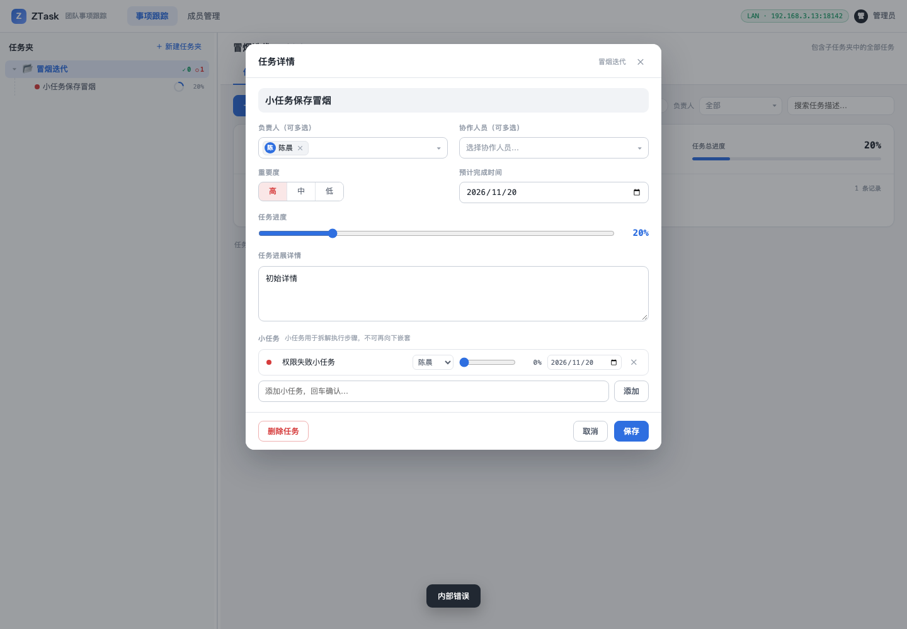
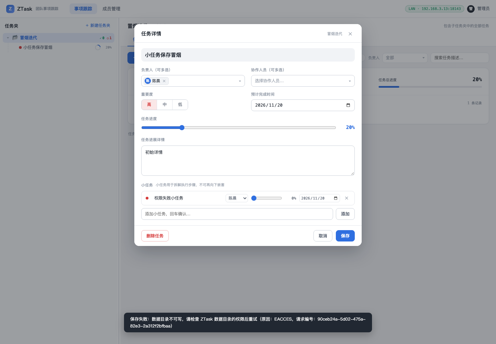
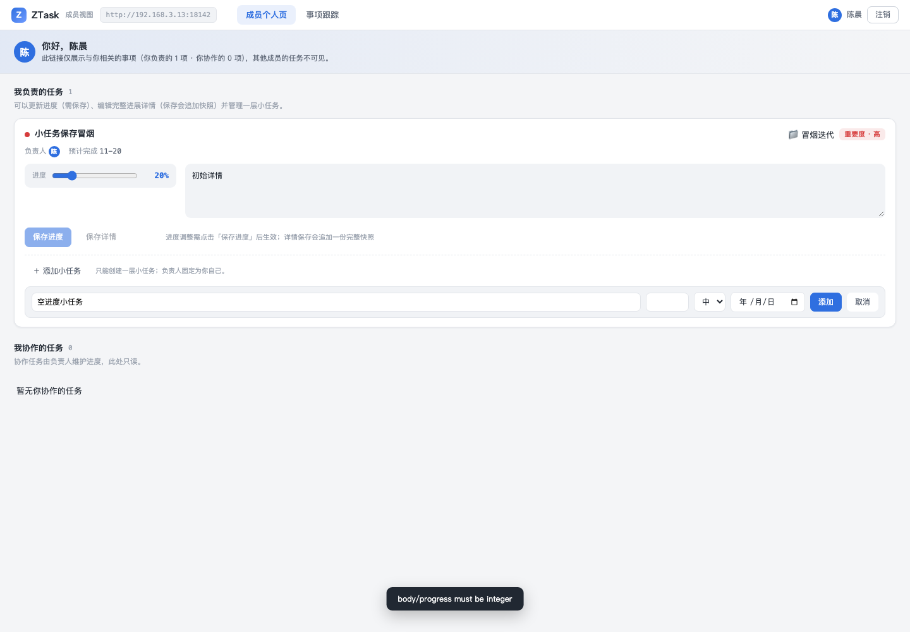
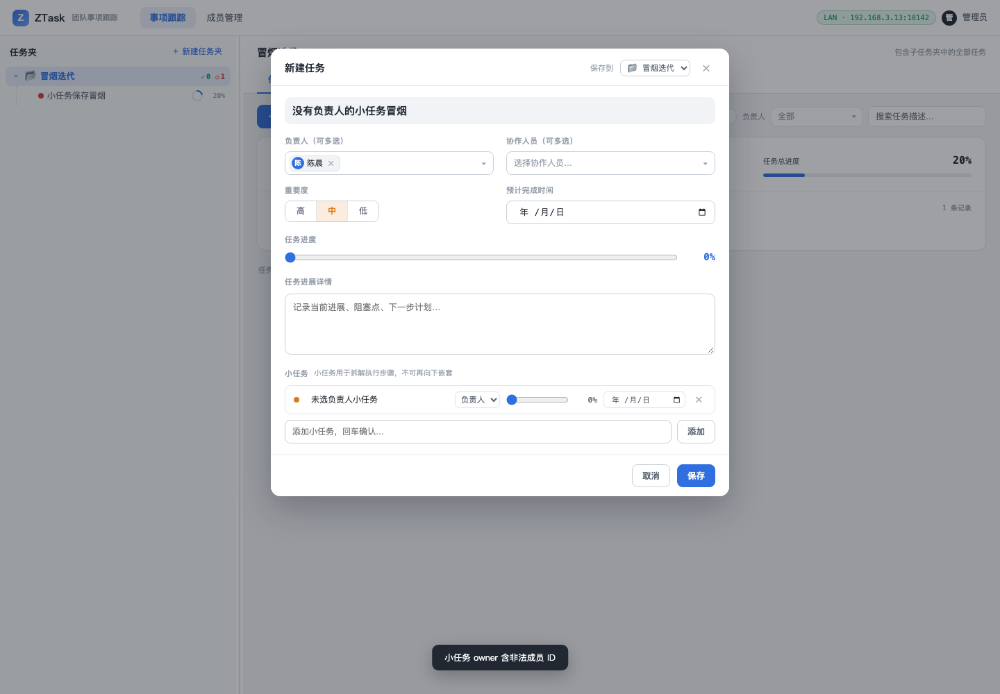
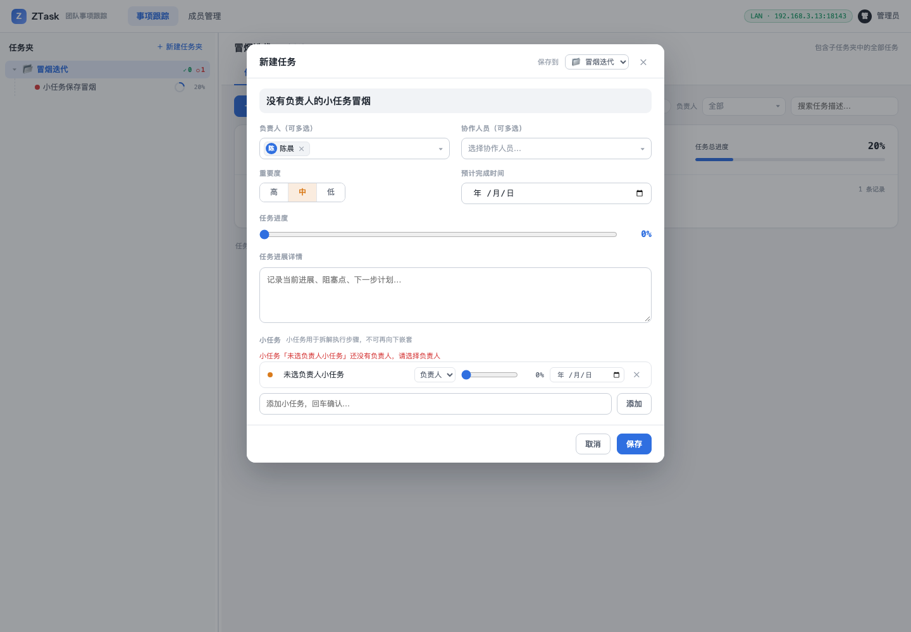
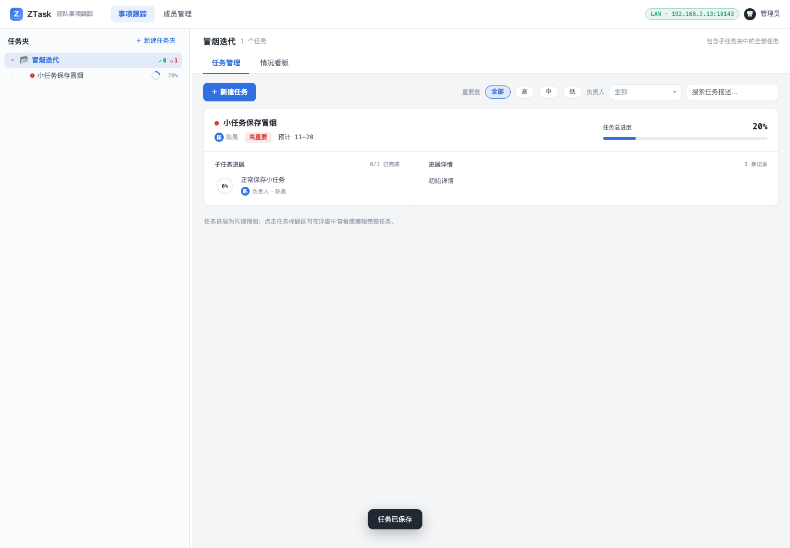
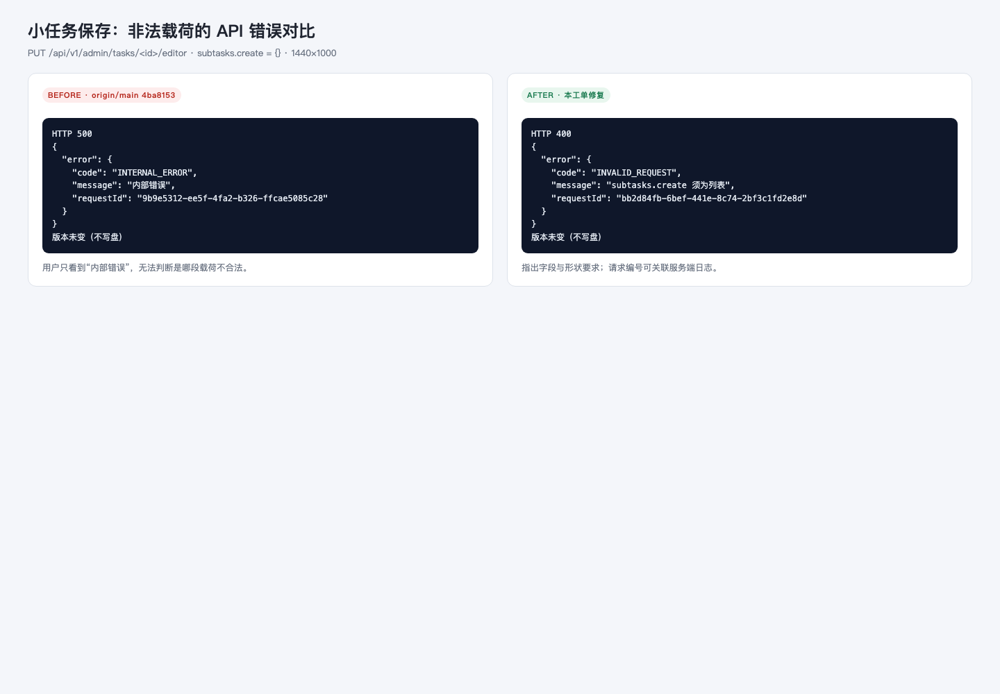

- 分支
- agent/fix-subtask-save-error-5fab3efafcd6
- Before
- origin/main @ 4ba8153（独立 worktree 构建）
- After
- 本工单工作树构建（含修复）
- 服务
- ztask serve · loopback 18140/18141 · LAN 18142/18143
- 数据
- 两套一次性隔离目录；同结构种子数据
- 视口
- 1440×1000
Computer Use Smoke · Before / After
小任务保存错误提示修复 · 冒烟报告
在真实构建与真实 API 上复现并对比小任务保存的两类失败：不可写数据目录触发 500“内部错误”，以及成员端空进度提交英文校验消息。修复后前者给出目录权限原因与请求编号，后者在本地拦下并给出中文提示；管理端缺少小任务负责人改为行内定位，合法小任务保存回归通过。当前主线上的常规点击链路未能复现用户原始 500，报告同时记录该限制与可复现的 500 载荷路径。
10冒烟场景
5修复前后对比
432自动化测试
1复现限制
Environment and Artifact
2026-11-03 · macOS · Chrome 156 · 1440×1000 · 真实构建 + 真实 APIScenario Matrix
4 fail · 4 fixed · 2 pass| # | 场景 | 结果 | 验证结论 | 证据 |
|---|---|---|---|---|
| 01 | Before：不可写目录保存小任务 | FAIL · 基线缺陷 | 任务目录 chmod 555 后保存，API 500，toast 仅“内部错误”。 | screenshots/01-before-storage-error.png |
| 02 | After：不可写目录保存小任务 | FAIL → FIXED | 同一操作显示“保存失败：数据目录不可写，请检查 ZTask 数据目录的权限后重试（原因：EACCES，请求编号：…）”。 | screenshots/02-after-storage-error.png |
| 03 | Before：非法 subtasks.create 载荷 | FAIL · 基线缺陷 | PUT editor 的 subtasks.create 传对象，返回 500 INTERNAL_ERROR / 内部错误，版本不变。 | screenshots/09-api-before-after.png |
| 04 | After：非法 subtasks.create 载荷 | FAIL → FIXED | 同一请求返回 400 INVALID_REQUEST / subtasks.create 须为列表，版本不变、无 revision。 | screenshots/09-api-before-after.png |
| 05 | Before：成员端空进度 | FAIL · 英文技术消息 | 清空小任务进度提交，toast 显示 body/progress must be integer。 | screenshots/03-before-member-progress.png |
| 06 | After：成员端空进度 | FAIL → FIXED | 提交前拦截，toast 显示“小任务进度必须是 0–100 的整数”，未发送请求。 | screenshots/04-after-member-progress.png |
| 07 | Before：小任务未选负责人 | FAIL · 服务端笼统错误 | 新建任务内先加小任务后选主负责人，保存返回 400“小任务 owner 含非法成员 ID”。 | screenshots/05-before-subtask-owner.png |
| 08 | After：小任务未选负责人 | FAIL → FIXED | 红字就地定位到“小任务「未选负责人小任务」还没有负责人，请选择负责人”，未发送请求。 | screenshots/06-after-subtask-owner.png |
| 09 | 合法保存回归（Before / After） | PASS | 编辑任务新增“正常保存小任务”，两版均显示“任务已保存”，卡片出现该小任务；主体与版本递增正确。 | screenshots/07-before-valid-save.png screenshots/08-after-valid-save.png |
| 10 | 普通测试与冒烟回归 | PASS | pnpm test：57 个测试文件、432 个测试全绿；新增 API 错误报告、编辑器校验与错误翻译测试。 | screenshots/08-after-valid-save.png |
Issues and Observations
P1 保存失败只显示“内部错误”P1 小任务载荷结构错误落入 500
P2 可预判表单错误被送到服务端
P2 原始用户 500 未能按常规点击链路复现
保存失败只显示“内部错误”
- 现象
- 任务目录不可写时保存小任务，toast 只有“内部错误”，不知道是权限、磁盘还是代码问题。
- 期望
- 提示具体原因（目录不可写/EACCES）、下一步动作与请求编号。
- 根因
- 统一错误处理把未预期异常压成 INTERNAL_ERROR / 内部错误，且没有服务端日志。
Fixed · 02/04/06 场景
小任务载荷结构错误落入 500
- 现象
- PUT editor 的 subtasks.create 传对象时返回 500“内部错误”。
- 期望
- 返回 400 并指出 subtasks.create 须为列表，且不写盘。
- 根因
- saveEditor 直接 for...of 未校验 create/update/deleteIds，对象或 null 条目抛 TypeError。
Fixed · 400 + 不产生 revision
可预判表单错误被送到服务端
- 现象
- 成员端清空进度后提交，toast 显示 body/progress must be integer；管理端小任务未选负责人时显示“小任务 owner 含非法成员 ID”。
- 期望
- 提交前就地提示具体行与字段，并用中文说明。
- 根因
- 表单缺少小任务负责人/进度的本地校验。
Fixed · 06/04 场景
原始用户 500 未能按常规点击链路复现
- 尝试
- 新建任务带小任务、编辑任务新增小任务、成员个人页添加小任务，均在主线构建与用户数据副本上成功。
- 结论
- 原始触发条件仍未知；本次修复覆盖可复现的 500 载荷与错误提示，后续可用请求编号定位用户侧真实原因。
Open · 等待请求编号/截图
Evidence
9 screenshots






Automated Coverage Assessment
4 areas reviewed| 范围 | 自动化看护 | 结论 | 建议 |
|---|---|---|---|
Conclusion
修复完成 · 原始触发仍待用户线索可复现的 500 载荷路径与错误提示已修复并通过 432 个自动化测试与浏览器前后对比；常规点击链路上未复现用户原始 500，需用户提供请求编号/截图继续定位。
- 不可写目录与非法小任务载荷两类 500 均已从“内部错误”变为可操作提示。
- 成员端空进度与管理端缺少负责人改为提交前中文本地提示。
- 合法小任务保存链路在修复前后均通过。
- 原始用户报错的触发条件未知，报告不宣称已修复该未知根因。
由 computer-use-smoke-reporting 工作流生成；截图仅含一次性冒烟数据，不含私有 Feishu 内容或凭证。